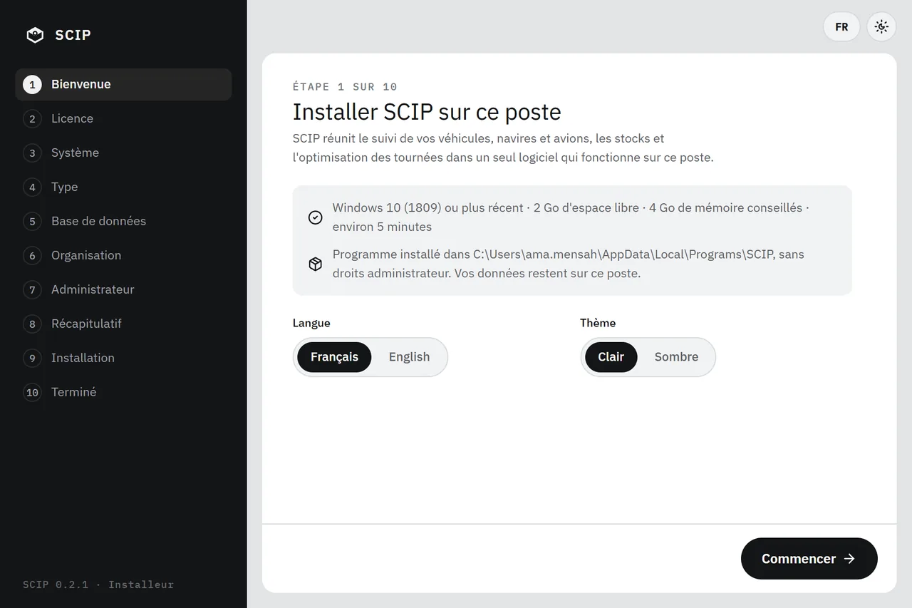
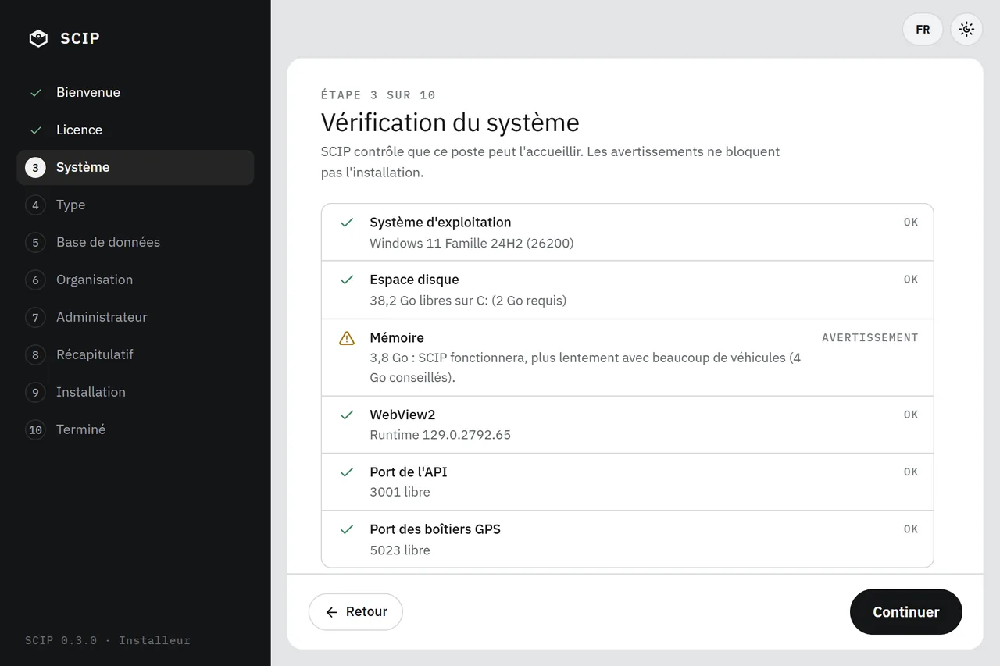
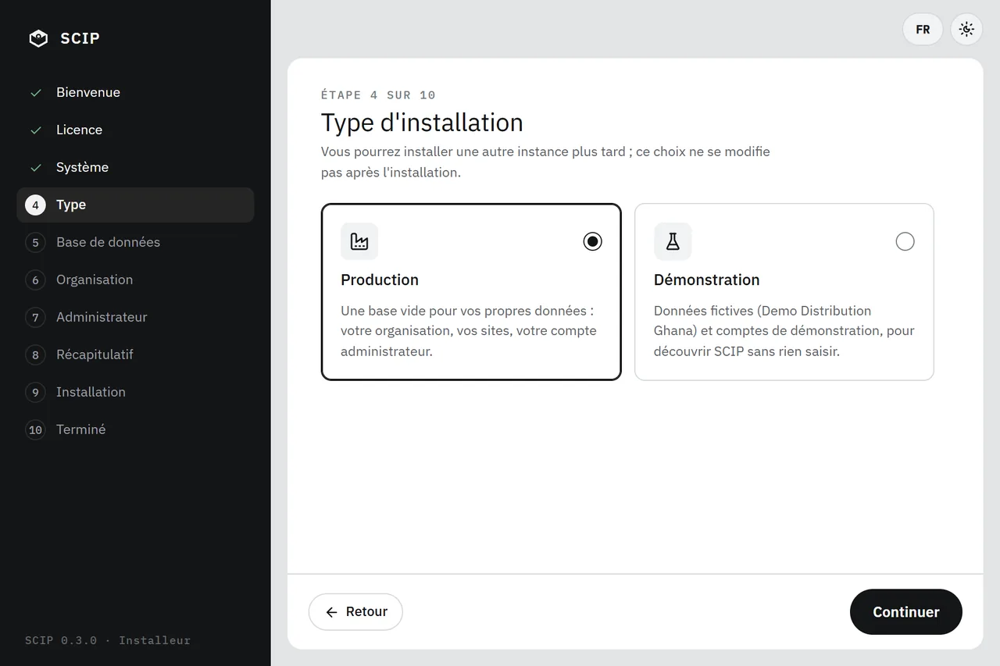
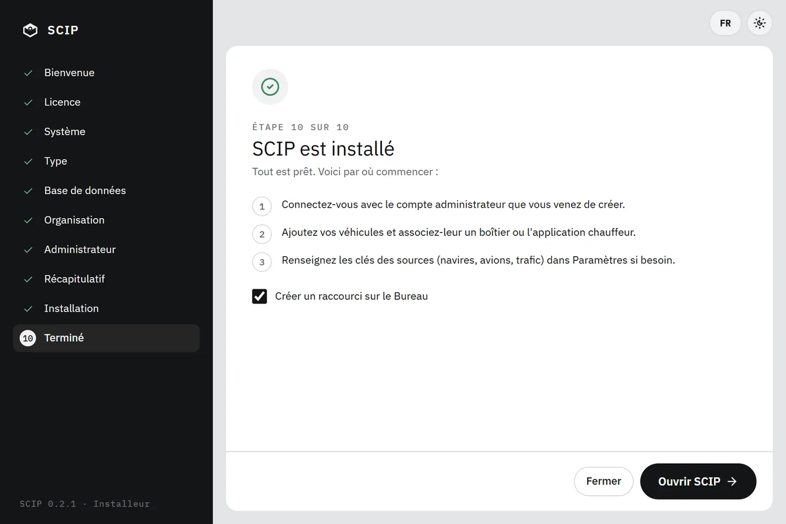
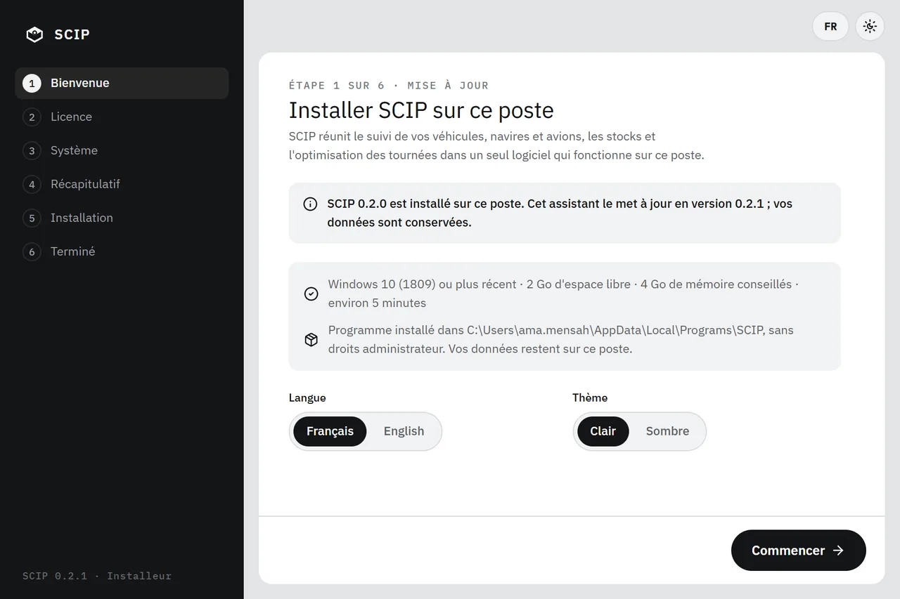

342 Mo · sans droits administrateur · environ 5 minutes
Un seul fichier installe l’application, sa base PostgreSQL + PostGIS, son API et son moteur IA. Aucun serveur, aucun abonnement, aucune clé requise.
Autres versions
SCIP est un logiciel Windows (10 version 1809 ou plus récent, 64 bits). Il n’existe pas de version macOS ni Linux.
SCIP est d’abord un logiciel Windows (10 version 1809 ou plus récent, 64 bits). Les versions macOS et Linux sont préliminaires : leurs limites sont écrites sous chaque bouton.
xattr -dr com.apple.quarantine /Applications/SCIP.appà savoir L’installeur n’a pas de certificat de signature de code : Windows SmartScreen affiche un avertissement au premier lancement.
Installation
Pas de droits administrateur. Seul prérequis logiciel : WebView2, déjà présent sur la plupart des PC Windows 10 et 11 ; l’installeur le vérifie.

L’installeur contrôle le poste : Windows 10 (1809) ou plus récent, 2 Go d’espace libre, 4 Go de mémoire conseillés, WebView2.

Production : une base vide pour vos données. Démonstration : des données fictives et sept comptes de démo, dont six proposés à l’écran de connexion.

SCIP s’ouvre depuis le menu Démarrer. La base, l’API et le moteur IA démarrent avec lui.
Cycle de vie
Chaque geste préserve vos données, et chaque mise à jour prouve d’où elle vient.

Limites
SCIP est un projet d’école, personnel et non commercial. Voici où il s’arrête aujourd’hui.